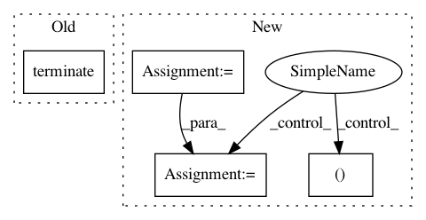

f956c38cd73d000769c710165604a1b5297fd1a5,python/tvm/micro/debugger.py,GdbDebugger,stop,#GdbDebugger#,72
Before Change
def stop(self):
self.did_terminate.set()
self.popen.terminate()
signal.signal(signal.SIGINT, self.old_signal)
class GdbTransportDebugger(GdbDebugger):
After Change
children = psutil.Process(self.popen.pid).children(recursive=True)
for c in children:
c.terminate()
_, alive = psutil.wait_procs(children, timeout=self._GRACEFUL_SHUTDOWN_TIMEOUT_SEC)
for a in alive:
a.kill()
finally:
self.__class__._STARTED_INSTANCE = None
In pattern: SUPERPATTERN
Frequency: 3
Non-data size: 4
Instances
Project Name: apache/incubator-tvm
Commit Name: f956c38cd73d000769c710165604a1b5297fd1a5
Time: 2020-10-31
Author: areusch@octoml.ai
File Name: python/tvm/micro/debugger.py
Class Name: GdbDebugger
Method Name: stop
Project Name: flow-project/flow
Commit Name: 75028b69a20261c44081f807a4a18d6d4bcb2929
Time: 2017-02-21
Author: dicksteinleah@gmail.com
File Name: cistar-dev/build-tester.py
Class Name:
Method Name:
Project Name: deepfakes/faceswap
Commit Name: 2b4ae91b02d0b3b42e2a634c4f432df6d20d3b7c
Time: 2018-11-04
Author: 36920800+torzdf@users.noreply.github.com
File Name: lib/gui/wrapper.py
Class Name: FaceswapControl
Method Name: terminate